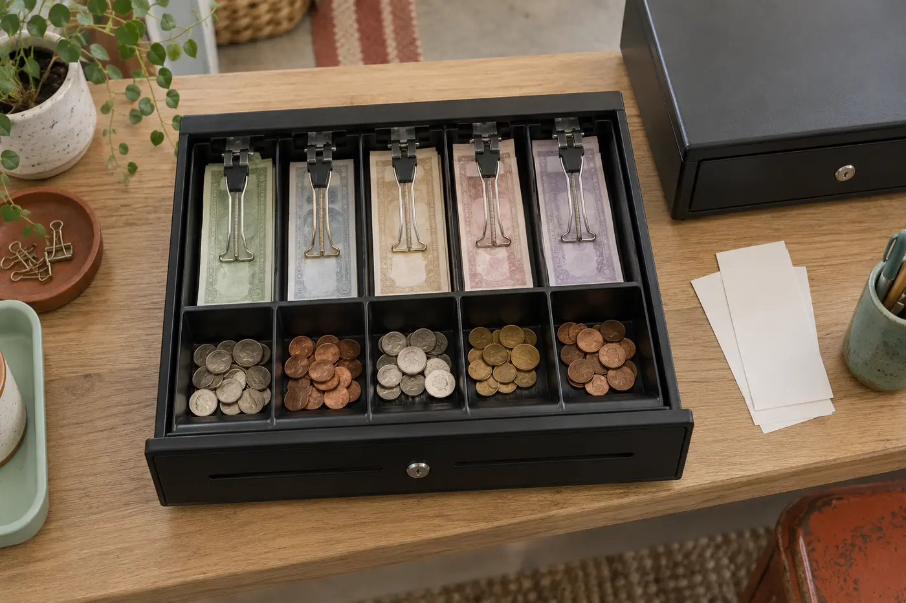
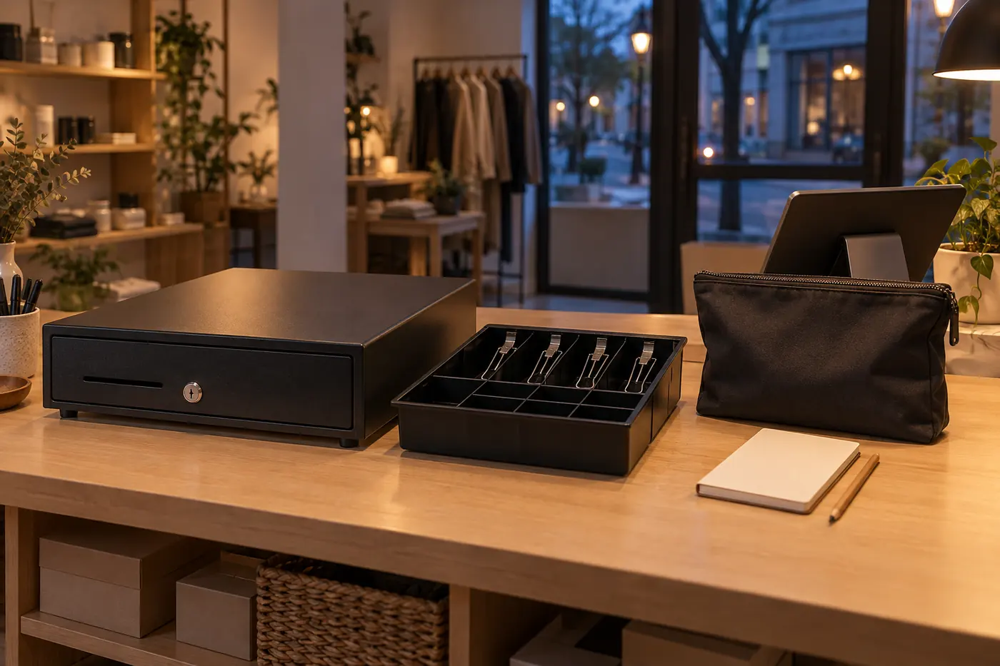

A cash drawer is a small part of a checkout, but it connects several decisions that are usually made by different people. Someone buys the point-of-sale device. Someone else orders the receipt printer. A carpenter leaves a gap under the counter. The opening cashier then discovers whether all three choices work together. I approach the drawer as an operational junction rather than a box with a lock: it needs a supported opening path, enough usable space, an intelligible till, and a routine that survives a busy afternoon.
This publication uses a fictional editor, Mara Ellis, to present an editorial explanation. I have not handled or tested the equipment described here. The photographs are newly generated AI concept scenes, not evidence of product performance. Examples are hypothetical. Actual compatibility must come from the documentation for your exact point-of-sale setup, printer and drawer; appearance, connector shape and a familiar platform name are not enough to establish it.
Start with the opening path, not the product photograph
Before comparing sizes or finishes, draw the chain that will open the drawer. In a printer-driven setup, the point-of-sale application asks a supported receipt printer to send a drawer-opening signal. The drawer attaches to the printer's designated kick port, not to an arbitrary socket on the tablet. Other supported arrangements may use a dedicated interface or a platform-specific hub. A manually operated drawer avoids an electronic connection, but it also changes the cashier's routine and can make access harder to associate with a sale.
If you are assembling a product shortlist, the 7 Best Cash Drawers for Square and Shopify POS article provides a separate starting point for candidate models. I would use that shortlist only after identifying the actual supported connection route. Product descriptions can help you ask a better question, but they do not replace the current hardware documentation or a written compatibility answer for the particular combination you plan to buy.
Write down the point-of-sale hardware generation, operating system, application, printer model and drawer interface. Include the country where the setup will be used, because available hardware and supported configurations can vary. The useful purchasing question is not “Does it work with Square?” or “Does it work with Shopify?” It is whether this precise drawer, with this cable, can be opened through this precise printer or interface using the software configuration at this checkout. Our connection guide breaks that investigation into parts.
Separate the drawer's three jobs
The first job is physical storage: hold the working float and accept money during trading. The second is transaction access: open when an authorized cashier needs to make change. The third is accountability: support a clear record of who had custody of the till and when. A drawer can perform one job well and another poorly. A capacious till may still be awkward under a low counter. A smooth opening action does not identify which person removed cash. A strong-looking lock does not turn a checkout drawer into a rated safe.
I find it useful to name the failure that matters most at this particular counter. For a narrow pop-up stall, a drawer that blocks the only walking route may be the primary problem. At a shared service desk, the risk may be an unexplained handover. At a busy café, insufficient coin space may cause constant interruptions. This is not a ranking of industries; it is a way to make the equipment serve the workflow instead of forcing every workflow around a generic purchase.
Give the drawer a limited role. Keep only the cash needed for ordinary change and follow your organization's policy for moving excess cash to an appropriate controlled location. Decide separately who can authorize refunds, how paid-outs are recorded, and where keys are kept. Hardware is a supporting tool for these decisions, not a substitute for them.
Compare configurations by the work they create
Comparison table · swipe or scroll sideways on narrow screens
| Configuration | Useful when | Confirm before buying |
|---|---|---|
| Compact body | Counter space is tight | Usable compartments and open clearance |
| Larger till | More denominations need separation | Reach, cash-removal policy and counter depth |
| Removable insert | A controlled handover moves the till | Removal clearance, identity and storage procedure |
| Manual opening | The approved workflow does not need electronic opening | Key custody and access records |
| Printer-driven opening | The supported checkout route uses a printer | Exact printer, cable and drawer compatibility |
A compact drawer trades counter space for tighter compartments and potentially smaller working capacity. A larger drawer may give more room for denomination separation and slips, yet require more reach or a wider open envelope. A removable till can simplify a controlled handover, provided there is a secure place to move it and a compatible spare if the operation needs one. A fixed insert eliminates one removable item but may make a count harder in a cramped setting. None of these features is automatically better; each creates a different piece of work.
Look beyond the outside width. Check usable bill slots, coin cup size, hold-down clips, media slots, till removal procedure, mounting options and the required opening clearance. Photos sometimes conceal the depth behind the visible front panel. The drawer body needs space for its cable and any mounting bracket as well as room for the moving tray. If the cable is strained whenever the drawer opens or someone moves the printer, the installation has not been planned as a complete system.
Choose criteria that you can verify. “Feels professional” is difficult to put in a purchase specification. “The till accepts the denominations used at this location without folding notes under the clips” is much clearer. Likewise, replace “small enough” with a measured counter envelope and an agreed opening zone. Our counter-fit guide gives you a way to turn those observations into a usable sketch.
Give the open drawer its own floor plan
A closed drawer occupies a rectangle. An open drawer occupies a route through the cashier's workspace. Mark both rectangles before deciding where to install it. A cashier should be able to reach the coin cups without turning away from the customer, and should not need to step backward into a queue, another worker or a swinging cupboard door. The opened tray must not interfere with an accessible path, seating, mobility equipment or the safe use of nearby appliances.
Use a cardboard mock-up to explore reach and clearance without handling cash. Include the screen, receipt printer, scanner, bags and frequently used packaging on the counter sketch. Ask the intended users to simulate taking payment and giving change. A comfortable arrangement for a tall standing person can be unsuitable for a shorter person or a seated cashier. This is an observation exercise, not an ergonomic certification; seek appropriate professional advice where access or workplace requirements demand it.
Avoid mounting into material whose load capacity or thickness you do not know. Follow the drawer manufacturer's mounting directions and the counter owner's requirements. Do not assume an improvised bracket is safe because the drawer seems light when empty. The load includes the till contents and forces from repeated opening. Plan access to the key cylinder and cable connector after mounting, rather than discovering that a routine service step requires dismantling the counter.

Organize change for recognition under pressure
The till arrangement should make a wrong choice noticeable. Keep denominations in a consistent order, leave coin cups clear enough to see their contents, and separate paid-out documentation from uncounted money. A five-slot layout does not tell you how to use it in every currency. Choose the layout around the notes and coins actually handled at the location, including denominations that tend to arrive during peak hours. A small amount of each denomination is not necessarily a useful float if most customers pay with large notes.
Training matters more than elaborate labels. Walk a new cashier through a simulated sale, change calculation, interrupted transaction and refund authorization. Explain what belongs in the drawer and what does not. Personal money, tips, coupons and receipts need defined treatment, not an empty compartment chosen on the fly. Where the point-of-sale software records tips or another non-sale cash movement, follow the relevant business procedure rather than inventing a parallel notebook that nobody reconciles.
Set a consistent opening count. The cashier should acknowledge the float before taking custody, and any discrepancy should be recorded before the first sale. A drawer that begins with an assumed balance can make a later shortage impossible to interpret. Our opening-shift guide covers a small, repeatable sequence that distinguishes an equipment check from a cash count.
Decide who owns the till during a handover
One drawer can serve many cashiers, but accountability becomes harder if “everyone uses it” is the only rule. Decide whether custody follows a person, a shift, or a shared station. The software's user permissions may control who can trigger a drawer opening, while the physical key can still bypass that opening path. Treat those as separate controls. Restrict keys according to policy and avoid assigning a shared login merely because it is convenient during a rush.
A handover should identify a moment when responsibility changes. Where your policy allows it, two people can count together and record the observed amount before the incoming cashier begins. In a high-volume setting, a spare removable till may reduce disruption, but only if each till has a clear identity and opening record. Swapping inserts without documenting which float moved where simply relocates the confusion.
Discuss exceptional access before it happens. Who can open the drawer if the printer fails? How is a no-sale opening recorded? What happens if a cashier leaves unexpectedly? These questions are easier to answer when the counter is quiet. The shared-checkout guide explores custody and permissions without pretending that a particular lock or app feature guarantees security.
Design closing as a reconciliation, not a guess
At close, compare physical cash with an expected cash figure whose meaning you understand. Total sales are not necessarily the same as expected money in the drawer. Card payments, opening float, refunds, cash paid-outs and cash moved elsewhere all affect the relationship. Learn which report your configured system produces and whether it already includes each adjustment. Applying an adjustment twice can manufacture a discrepancy even when the physical money is correct.
Count away from the public queue where permitted and appropriate. Separate the next opening float from money designated for a deposit only after the count is recorded. Keep the original count and any recount visible; replacing a mistaken figure without a note removes useful evidence. If a difference remains, record it under your business procedure rather than changing a transaction to make the numbers agree. Accounting and tax treatment should be decided with a qualified professional, not inferred from this guide.
A short cash-close procedure can make the arithmetic traceable without making the cashier responsible for investigating every discrepancy. Separate recording, approval and investigation. The person closing a shift needs a clear next step, not a demand to find an explanation before going home.

Buy only after the complete arrangement is legible
- Record the exact supported point-of-sale, printer and drawer connection route.
- Measure the closed body, cable space and open tray envelope at the actual counter.
- Confirm the till layout suits the local currency and working change pattern.
- Assign key custody, no-sale access and shift handover responsibilities.
- Establish an opening count and a closing report with clearly defined adjustments.
- Obtain the manufacturer's warranty, cable and replacement-till information before ordering.
A useful final review is to ask a colleague to explain the entire setup from your notes. They should be able to name the opening path, point to the clearance zone, identify the opening float record and describe a printer-failure response. If they cannot, the missing detail is probably more important than the drawer's finish. Keep that explanation with the checkout documentation so a later replacement does not depend on one person's memory.
After installation, use the manufacturer's checks and a controlled non-customer test procedure to confirm behavior before normal trading. Observe the real opening movement and inspect for cable strain or obstructions. Do not repeatedly trigger a jammed drawer or improvise electrical adapters. Our drawer-care guide starts with safe isolation and documentation, because most useful fault reports begin by identifying what changed, not by guessing which component to replace.